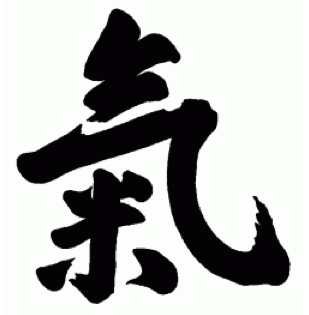

| Ki-aikido | Ki-Aikidon ja Aikidon erot | Aikidon suuntaukset | Ki |
"Ki" on käsite, joka liittyy perinteiseen japanilaiseen ajatteluun ja kulttuuriin. Se on sana, jota käytetään kuvaamaan monimutkaista käsitettä, joka liittyy elämänvoimaan, energian virtaukseen ja henkiseen tietoisuuteen. Ki voi olla vaikea määritellä tarkasti, koska se on enemmän filosofinen ja henkinen käsite kuin konkreettinen asia. Tässä kuitenkin joitakin näkökohtia, jotka liittyvät käsitteeseen "ki":
Usein "ki" liitetään energiaan, joka virtaa kaikessa elollisessa. Se voi olla verrattavissa käsitteisiin kuten "elämänvoima", "henkinen energia" tai "prana" eri kulttuureissa ja filosofioissa. Ki on katsottu olevan se voima, joka ylläpitää elämää ja tekee liikkeestä mahdollista.
Ki-energia liitetään toimintaan ja liikkeeseen. Japanilaisessa taiteissa, kuten Aikidossa, korostetaan ki-energian käyttöä liikkeissä. Ki voi auttaa tekemään liikkeistä sulavampia ja tehokkaampia.
Ki voi myös liittyä henkiseen tietoisuuteen ja keskittymiseen. Monet meditaatio- ja harjoitustekniikat pyrkivät auttamaan harjoittelijoitaan ymmärtämään ja hallitsemaan ki-energiaa. Tämä liittyy usein henkiseen kasvuun ja itsetuntemukseen.
Joissakin japanilaisissa itsepuolustuslajeissa, kuten Aikidossa ja Ki-aikidossa, opetetaan ki-periaatteita, jotka liittyvät liikkeen, keskittymisen ja energian hallintaan. Näitä periaatteita voidaan soveltaa niin taistelulajeihin kuin elämän yleisiin tilanteisiin.
On tärkeää huomata, että "ki" on abstrakti käsite, ja sen tulkinta voi vaihdella kulttuurista ja filosofiasta riippuen. Japanilaisessa kulttuurissa se on kuitenkin keskeinen käsite ja vaikuttaa moniin eri taiteisiin, kuten taistelulajeihin, meditaatioon ja perinteiseen lääketieteeseen. Ki voi olla myös syvällinen käsite, joka liittyy ihmisen kokonaisvaltaiseen hyvinvointiin ja henkiseen kasvuun.
Länsimaiselle ihmiselle "ki" voi olla käsite, joka liittyy henkiseen energiaan tai voimaan. Se voi olla verrattavissa käsitteisiin kuten "elämänvoima", "henkinen energia" tai "sielu".
Ki voi olla myös tapa kuvata energian virtausta tai liikettä kehossa ja ympäristössä. Se voi liittyä tasapainoon, virtaukseen ja energian optimaaliseen käyttöön.
Käsite "ki" voi liittyä henkiseen keskittymiseen ja tietoisuuteen omasta kehosta ja mielen tilasta. Se voi olla osa meditaatiota ja mindfulness-harjoituksia. Ki voi liittyä taitoon ja taituruuteen tietyssä toiminnassa tai taiteessa, kuten Aikidossa. Se voi auttaa tekemään liikkeistä sulavampia ja tehokkaampia.